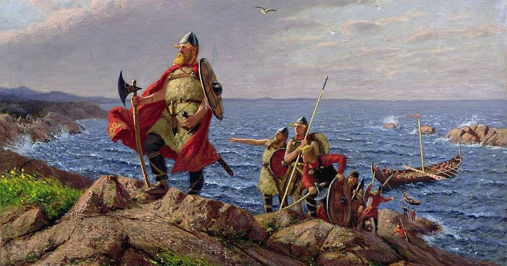
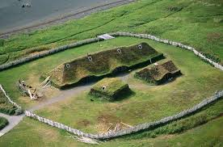
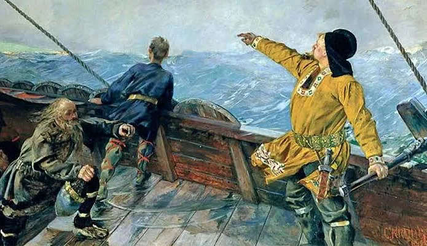
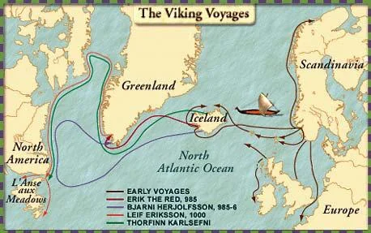

Leif Erikson: El Descubridor
Hijo de Erik el Rojo, Leif guio a su tripulación hacia el oeste. Las sagas cuentan que llegó a un lugar de pastos verdes y viñas, al que llamó Vinland.

Hijo de Erik el Rojo, Leif guio a su tripulación hacia el oeste. Las sagas cuentan que llegó a un lugar de pastos verdes y viñas, al que llamó Vinland.

La única evidencia arqueológica confirmada de un asentamiento vikingo en América del Norte, datado alrededor del año 1000 d.C.

Biarne Herjólfsson es reconocido por las sagas nórdicas como el primer europeo en avistar América del Norte, aproximadamente en el año 985 o 986, unos 15 años antes que Leif Erikson. Herjólfsson se desvió de su ruta hacia Groenlandia y divisó nuevas tierras al oeste, sin desembarcar, dando paso a que Erikson explorara esas regiones posteriormente.
Navegar desde Groenlandia hasta las costas de América del Norte fue una hazaña legendaria. Siguieron las corrientes hacia Helluland, Markland y finalmente Vinland.

Líder del mayor intento de colonización en Vinland.
Toca para ver su
estatua real.
El descubridor de Vinland. Hijo de Erik el Rojo.
Toca para ver su
estatua real.
El Thorfinn de Makoto Yukimura: de esclavo a guerrero legendario.
Toca
para ver el arte oficial.
Obra maestra de Makoto Yukimura (2005). 29 tomos.
Explora venganza, guerra y
la búsqueda de un paraíso llamado Vinland.